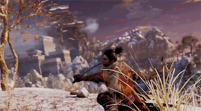

Sekiro Shadow's Die Twice é um Action-RPG, desenvolvido pela FromSoftware e publicado pela Activision. No jogo, você encarna a pele do Lobo, um habilidoso Shinobi que tem como objetivo proteger seu Lorde e possuí como principal peculiariedade a sua imortalidade, não importa quantas vezes ele morra, ele sempre volta a vida, embora isso traga consequências para aqueles em seu entorno.
Trailer

Enquanto eu respirar, o portão permanecerá fechado! - Gyoubu Masataka
Mova-se como um shinobi!
 Lista de Chefes
| Chefes | Nome |
|---|---|
| 1 | Lady Butterfly |
| 2 | Gyoubu Masataka |
| 3 | Genichiro Ashina |
| 4 | Guardian Ape |
| 5 | Great Shinobi Owl |
| 6 | Corrupted Monk |
| 7 | Divine Dragon |
| 8 | Demon Of Hatred |